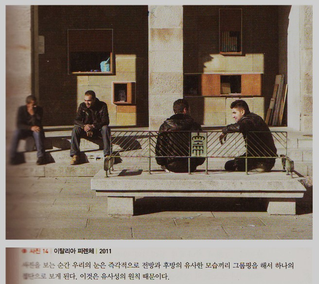
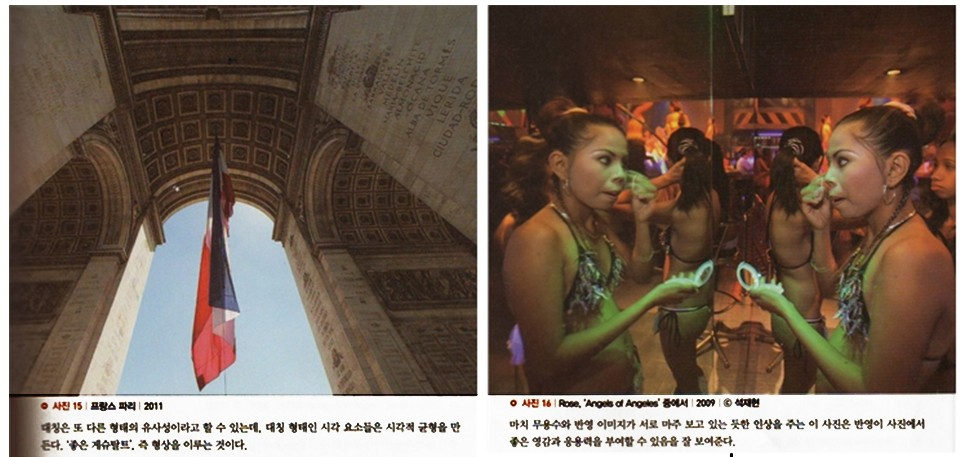
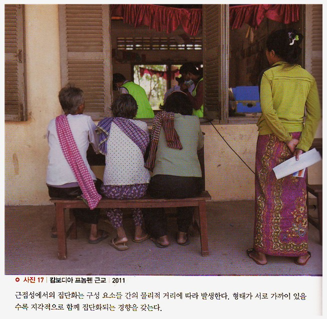

형상을 인지하게 되는 원칙으로, 형태적 구성 요소들이나 특징들이 연관성 있는 위치적 요소 등으로 그룹핑 되어 배열되는 경향을 집단성 혹은 집단화의 법칙이라고 한다. 이 법칙은 1932년 베르트하이머에 의해 처음으로 소개되었는데, 그는 5가지의 세부 집단화 규칙으로 이를 설명하고 있다.
베르트하이머는 이들 5가지 규칙을 통해서 이미지 속에 있는 각각의 요소들이 고립되거나 독립된 것으로 보이지 않고 어떻게 집단화 되어 나타나는지를 설명했다.
5가지 주요 집단화에는 유사성, 근접성, 연속성, 완결성, 공통성이 있으며, 이들 법칙들은 화면상에서 대상들을 어떻게 배치해야 하는지에 대한 기본 가이드라인을 제공한다. 집단화의 법칙은 사람들이 형태를 지각할 때 공통적 특성이나 물리적 거리 등으로 인해 그룹으로 인식하게 되는 경향을 가진다는 원리를 설명한다.
유사성(1) 유사성과 반복
유사성이란 크기, 형태, 색상, 운동 면에서 유사한 시각 요소들 끼리 그룹핑해 하나의 패턴이나 유기체로 보는 경향으로, 다른 요인이 도일한다면 유사성에 따라 형태는 집단화되어 보인다. 피사체를 있는 그대로 촬영하는 것보다는 의도적으로 유사성을 이용하면 사진에 더 큰 의미와 재미를 더할 수 있다.
다음 사진에서 왼쪽에 있는 두 남자는 정면이, 오른쪽에 있는 두 남자는 뒷모습이 촬영되었다. 사진을 보는 순간 우리의 눈은 즉각적으로 전방과 후방의 유사한 모습끼리 그룹핑을 해서 하나의 집단으로 보게 된다. 이것은 유사성의 원칙 때문이다.
(2) 대칭과 비대칭
대칭 형태인 시각 요소들은 시각적 균형을 만든다. ‘좋은 게슈탈트’, 즉 형상을 이루는 것이다. 사람들은 그림 속에서 대칭을 이루는 부분들을 그룹핑 하는 경향이 있다. 따라서 대칭 형태가 크면 클수록 하나의 형상을 모아서 보려고 한다.
일반적으로 구성이 대칭형일수록 사진은 더 평면적으로 보인다. 그래서 지나치게 정대칭의 장면을 사진으로 촬영하면 정적이거나 모노톤의 상황을 연출하게 된다. 이럴 때는 어느 정도 대칭의 형태를 깰 수 있는 다른 요소들을 사진 속에 가미해서 흥미를 불러일으키는 것이 바람직하다.
<사진 15>의 개선문은 정확한 대칭을 이루고 있지만, 극단적인 광각렌즈의 사용으로 프레임 상단(개선문 후면)에서부터 프레임 하단(개선문 전면)으로 갈수록 좁아지는 현상으로 보인다. 이런 이유로 지나치게 딱딱해질 수 있는 정대칭의 단점을 다소 보완할 수 있었다.
<사진 16>은 반영을 이용해 재미있는 대칭구성을 만든 좋은 예라고 할 수 있다. 마치 무용수와 반영 이미지가 서로 마주 보고 있는듯한 인상을 주는 이 사진은 반영이 사진에서 좋은 영감과 응용력을 부여할 수 있음을 잘 보여준다.
 근접성근접성은 보다 가까이 있는 2개 혹은 그 이상의 시각 요소들이 패턴이나 유기체로 인지될 가능성이 크다는 것을 의미한다. 근접성에서의 집단화는 구성 요소들 간의 물리적 거리에 따라 발생한다. 형태가 가까이 있을수록 지각적으로 함께 집단화되는 경향을 갖는다.
<사진17>에서처럼 비슷한 사물들이 근접한 거리에 있을 경우 쉽게 그룹핑이 되는 것을 볼 수 있다. 나란히 등을 보이고 있는 세 여성은 앉아 있는 모양새나 셔츠의 색상, 그리고 스카프에 이르기까지 형태가 비슷해서 더욱 가깝게 보인다. 오른쪽에 있는 여성은 이들과 물리적으로 거리가 떨어져 있을 뿐만 아니라, 의상의 색상도 다르고, 서 있다는 점에서 이들과는 별개의 인물로 설정된다. 뒤쪽에 있는 자원봉사자들은 동일한 연두색 의상으로 인해 물리적 근접성으로 그룹핑 된다.
 연속성인간의 눈은 변화나 방해가 되는 요소가 없는 사물들을 따라가는 것을 선호한다. 그래서 눈은 어떤 형태나 그룹이 방향성을 가지고 연속되어 있을 때, 이것을 형태 전체의 고유한 특성으로 보고 하나의 단위로 간주하는 경향이 있다. 결과적으로 우리 눈은 대상을 인지할 때 그 속에서 일관된 반복 형태를 찾아내고 일정한 패턴을 뽑아낼 수 있다.
<사진18>에서 우리의 시선은 연속된 형태인 창문들, 그리고 같은 방향으로 아래에서부터 위로 연결된 나무 그림자의 형태를 따라간다. 결과적으로 시선은 콘트라스트가 강한 하늘과 첨탑을 향해 올라간다.
연속성은 사진에서 보는 바와 같이 일정한 형태의 반복과 방향성에 의해 만들어질 수 있다. 우리의 눈은 단순히 있는 그대로의 현상을 받아들이지 않고, 특정한 원칙에 따라 움직인다.
완결성우리의 눈은 모양, 형태, 선 등 비슷한 사물들을 완결시켜서 보려는 경향이 있다. 완벽하게 형태를 이루지 못한 도형을 완성된 형태로 보려는 경향이 완결성이다. 형상에 어떤 틈이나 간격이 있으면 그것을 완전히 메우거나 닫아서 완성된 형상으로 보려고 하는데, 이는 안정적인 형태를 기대하는 우리의 인지 구조와 밀접한 관계가 있다.
<사진19>에서 보는 것처럼 중앙의 끊어진 부분의 형태를 완결시키고자 하는 심리적 이유로 인해서 우리의 시선은 이 부분에 계속 끌리게 된다. 완결성의 원리를 잘 이용해서 보는 사람들의 시선을 자가가 의도하는 부분으로 유도하는 좋은 방법이다.
미켈란젤로의 <천지창조>를 보면 오른쪽에 있는 창조주 하나님의 손과 아담의 손이 닿을 듯 말 듯 그려져 있는데, 보는 사람들은 이 주 손가락이 닿을 것을 기대하고 바라본다. 이렇게 함으로써 관객은 이 그림의 의미를 완결ㄹ시킬 수 있다.
 공통성
공통성
공동운명의 법칙이라고도 불리는 공통성은 대상들이 같은 방향으로 움직일 때, 그것을 하나의 단위로 인식한다는 것이다. 즉, 배열이나 성질이 같은 것끼리 집단화되어 보이는 성질을 말한다.
<사진 20>에서 오른쪽에 있는 두 사람은 바라보는 시선 방향에 의해 왼쪽 인물과 분리되고, 공동 운명을 갖는 것처럼 보인다.

[참고문헌]
[1]인지심리학과 그 응용,‘존 로버트 앤더슨’지음, 이영애 옮김, 이화대출판부, 2013. 1.18.
[2]원하는 사진을 어떻게 찍는가, 김성민, 소울메이트, 2015. 2. 9,
....
....
....
....
....